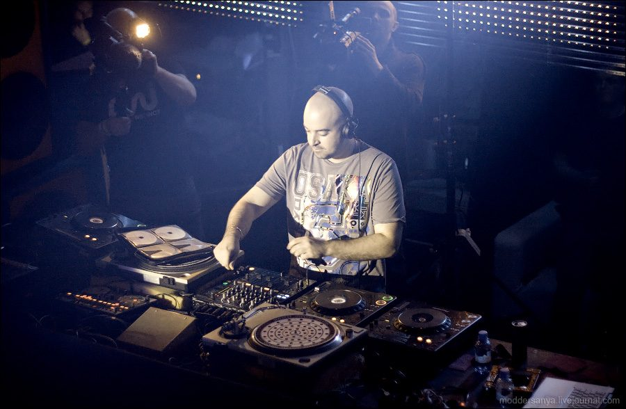

John O'Callaghan: Reaching for the big sky


.jpg){kind=link}
“I spent a long time making it, in total it took around six to eight months to complete the track and reach the stage where I felt it could be a huge tune. I knew I had to make an impact; I didn’t want it to be one of those faceless tracks that gets played for a few weeks before disappearing.” Ireland’s John O’Callaghan is talking about last year’s epic anthem Big Sky, the tune that catapulted him into the dance music stratosphere and has since secured his place as one of 2008’s fastest rising stars. While it boasts what’s arguably one of the most euphoric intros ever heard in a progressive trance tune, it’s the honeyed vocals of fellow Irish lass Audrey Gallagher that seals the deal – her delivery was so memorable that it scored her a gig traveling the world with Armin van Buuren as a member of his ‘Armin Only’ troupe.
“I put a lot more hard work in than usual because it was my first attempt at making big vocal tune,” John told us, in an Irish accent so thick ITM very nearly needed to solicit the services of a translator to work out what he was saying. “I’ve been a big fan of the vocal stuff over the years, the work from acts like Above & Beyond and Gabriel & Dresden, so I studied a lot of the tracks and broke them down into what I thought was needed with the approach, in terms of formula and feel. When I did finish it, I was really confident because I knew it was a good tune; I don’t always have that feeling about the music I make, but Big Sky just had something special.”
And a lot of people clearly agreed with him. John O’Callaghan had already quickly been earning himself a reputation as a talented DJ/producer who’d come to grips with the creative possibilities of ‘nu-trance’, with techno in particular holding a fairly large influence on his sound. In particular he’d delivered some rock-solid remixes, with his take on Doppler Effect’s Beauty Hides in the Deep delivering an especially massive punch in the clubs; but much bigger things were yet to come with the release of Big Sky. Upon completion he immediately emailed it to Armin who road-tested it on his ‘White Party’ tour of Australia last year, and the feedback from the crowd was instantaneous. “He got back to me and said ‘John, this is gonna be huge,’ and he signed it to his Armada label, planning a release for the summer around the Ibiza season. And everything just fell into place.” Big Sky caught on quickly, featuring memorably on Armin’s live Ibiza compilation Universal Religion and screaming through the clubs to eventually grab the listener-voted ‘Track of the Year’ award on Armin’s A State of Trance radio show, heard by millions round the world every week.
There’ll be plenty of trance crazies out there who’ll remember the first time they heard Big Sky. With the tune’s only breakdown cleverly shifted to the introduction where a soft bassline rises into an ethereal wash of synths, it’s joined eventually by a vocal performance from Audrey that rises far above the normal fluff we hear from trance divas. Big Sky was certainly a trance stormer on the deeper progressive tip, but interestingly, in the end it was the Agnelli & Nelson remix that received the lion’s share of attention, which took a much more traditional big-room approach. Did John find this a little ironic? Apparently, it was all part of the masterplan. “To be honest, the reason that I approached the track in that fashion was because I knew there was going to be a trance remix, and Agnelli & Nelson had always been the ones I’d wanted to take care of it. Chris [Agnelli] and Robbie [Nelson] are great friends of mine and they actually assisted with the production of the track. They’d already advised on certain aspects because they’re experts when it comes to vocal trance, they’ve had a lot of huge tunes over the years. And they were very hands on with Big Sky; they’d agreed to remix it before the original was finished, so that’s why the original came out in the progressive style because I knew Agnelli & Nelson would produce a bangin’ trance remix. So both bases were covered.”
The momentum from Big Sky has most definitely carried through to 2008 for John O’Callaghan. He’s found himself at the forefront of a reinvigorated trance scene that’s exploded with a ferocity that’s exceeded everybody’s expectations. Along with Dutchman Sander van Doorn (who John will be sharing headline duties with on the upcoming Australian Godskitchen tour), he’s found himself tagged as one of the leading trailblazers of the ‘nu-trance’ sound, which has seen the genre spread its creative wings and liberally take inspiration from techno, house, progressive, electro and much more. John’s approach is similarly versatile. You’ll find everything in his sets from uplifting vocal selections like Big Sky, to tunes that are borderline hard techno. “I come from a techno background, I was a big fan of people like Chris Liebing, Ben Simms and Mauro Picotto and that’s really what I grew up on, before I came into trance,” he says. “Techno for me is one of the most enjoyable forms of dance music. Some of my tracks might have a little bit more of a fluffy edge to them, but that’s purely because I enjoy the variation of producing different styles. One day I might feel like working on a vocal remix and the next I might feel like making some hard techno, but that’s the only way I’d ever work. I’m a clubber at heart; I know that when people go to a club they don’t want to hear the same stuff everybody else plays.”
John O’Callaghan will be returning to Australia in October, and he’ll bring with him the energy that inevitably surrounds one of those ‘hot new acts’ at any given time. But while he may be a drawcard, equally there’s plenty of excitement surrounding the Godskitchen tour itself this year. It’s a spot-on representation of what’s fresh and exciting about trance in 2008, with Callaghan playing alongside tech-trance heavyweight Sander van Doorn along with John O’Bir and Menno De Jong. Is he happy to be part of this ‘nu-trance’ clique? “I’d known for about six months that I had an Australian tour coming up, but I only found out with the tour’s official announcement who I’d be playing with. And I’m really excited to be playing alongside those guys,” he says. “I think it’s a really good lineup, and I think each DJ is going to bring something different to the table. We’ve all got a different style, and I don’t think you’ll hear any of us playing the same tracks.”
John O’Callaghan will be playing the following shows around the country for Godskitchen during October. Check out ITM’s Festival Page for more info…
Sat 4th Oct – Melbourne, Hisense Arena (new tickets onsale)
Sun 5th Oct – Gold Coast, The Bedroom
Fri 10th Oct – Perth, Metro City (SOLD OUT)
Sat 11th Oct – Sydney, The Dome